A Big step forward for the Employee Experience
With 10 million visits per year, the Source is a critical destination for all Employees to access company news, tools and resources. With no major updates for nearly a decade, the goal of this project was to improve the overall site experience and performance for our Employees, modernize capabilities and functionality and increase utility.
As Lead UX Designer I was tasked with overseeing all UX/UI tasks including interface design, user-testing and ensuring that the site adhered to the Global Design system while developing its own visual language and some new components.
More than 160 stakeholders, from 26 business groups, across 9 countries were involved in bringing this project to life. Over 2,800 Employees globally helped shape the experience with input and feedback.
Employee Experience Principle
We began the journey by establishing this guiding framework using the voice of the Employee, after conducting research with 2800 respondents across the Globe.
- Efficiency & productivity: one-stop platform for easy access to information
- Search & Findability: effective, efficient search experience for people and info
- UX design: consistent brand design, easy to use task-based experience
- Content Relevance: global and local content that can be customized
- Agile Workplace: tools and information to support working from anywhere
- Governance: Consistent management of the employee experience ecosystem
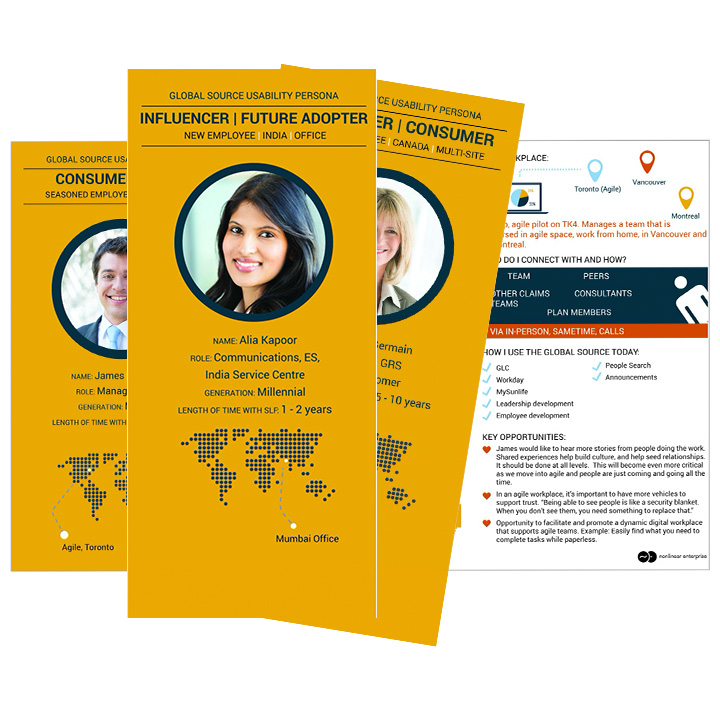
Personas
Based on the interviews/workshop we developed four personas. We referred to them throughout the initial development process, especially with the IA, wire-framing and early concepts.
- Personas were instrumental in guiding the myriad of ways employees around the Globe used the Employee Hub
- Personas included personal information, time with company and role.
- Key behavioural insights such as Goals + Motivators, Job Challenges, Who do they connect with and How they get news and information
Wireframes
After extensive meetings with stakeholders, user research on current employee usage of the existing site and building on the work done creating personas, I built out wireframes for the homepage and for a number of key pages and the global menu.
- We kept the mockup low fidelity in order to focus the attention on the content rather than on the brand and visual design
- The wireframes allowed us to iterate quickly on the placement of content on the homepage as well as playing around with the global navigation which was being reworked on the fly.
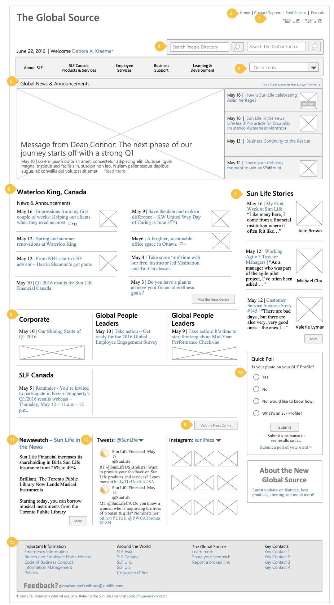
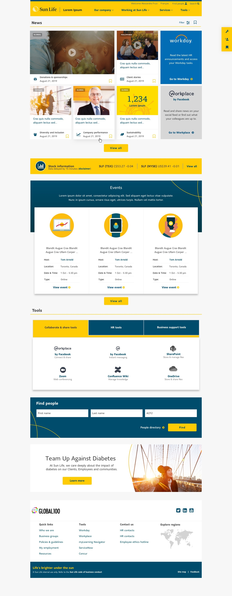
UI Design
After exhausting work nailing down the homepage IA, we shifted gears to higher fidelity concepts using Global Design components in Sketch.
- Create a style that leveraged existing brand components but still had its own identity
- Mockups were built for both Desktop, Tablet & Mobile
- Using a combination of static mockups and a clickable prototype in Invision, we created multiple iterations of the homepage.
- The most challenging component was the News tile area, which was an entirely new element and had to satisfy the needs of multiple lines of business, without overwhelming the user
- To add to the complexity was the Filter/Preference feature which allowed users to customize their news feed.
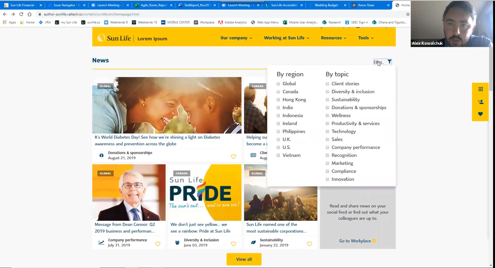
User Testing
With mockups in hand, we decided to conduct some internal testing in order to reveal possible usability problems.
Guiding Questions
- Test subjects were primarily North American employees, but also included additional testers from Asia
- We tested a wide variety of employees, based on their demographics, time at the company and roles
- Testing was a combination of remote / moderated
- Extremely positive feedback on the overall Design direction
- Testers felt the Homepage tile area was busy and there was some confusion finding content due to the confusion between the Tools/Resources area
- It also became clear that the site was not properly representing how users in Asia consumed content or used their Emplyoee hub.
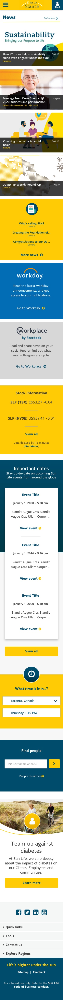
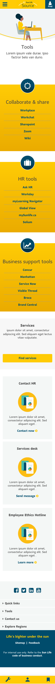
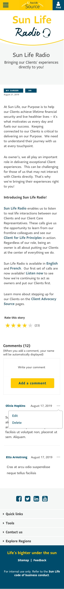
The Mega Menu
Seeing as one of the main guiding principles was findability and efficiency, we expended a lot of energy to redesigning the navigational area and the menu, which we lovingly referred to as the Mega menu.
- With the goal of streamlining the amount of sections, the challenge was how to combine legacy section and ensure users found content quickly and easily
- Both Open and Closed card sorting methods were conducted, using a combination of usertesting.com and Optimal.
- Testing went extremely well and close to 80% of content was unanimous
- A megamenu was developed as a result and refined after several rounds of testing using a clickable prototype in Invison.
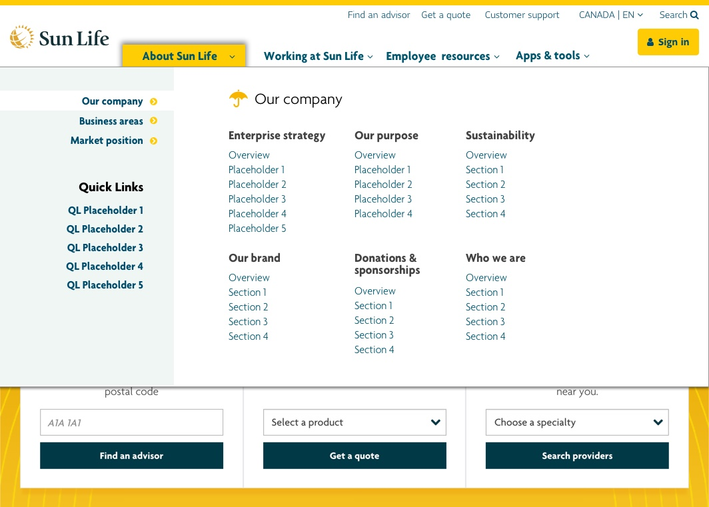
The Stretch Drive
We took the results from our testing and iterated on the homepage design as well as the mega menu. We also began to build out additional Landing pages and finalize templates and components in order to prepare for the migration of content to our new publishing platform, Adobe Experience Manager.
- We streamlined the Visual design of the tiles on the homepage and worked with stakeholders to work through the customization of the news feed
- Worked with Brand and the Communication team to populate content and develop a standard moving forward for the publishing team providing news stories
- Worked with the Dev team to migrate mockups from Sketch into development and document any changes in the requirements.
- Worked closely with the Publishing team to troubleshoot any UX issues as content was migrated into AEM and provide additional QA testing.
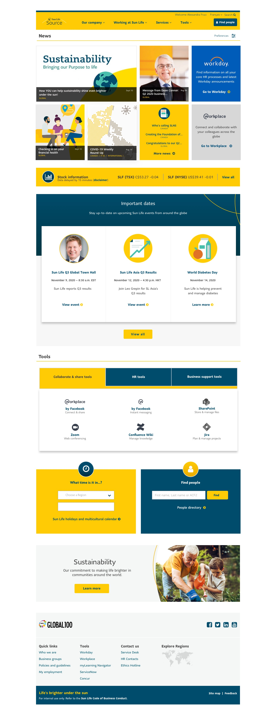
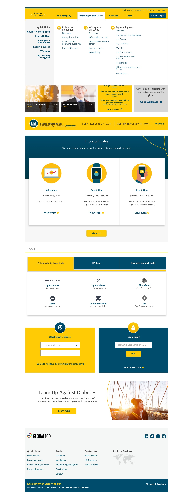
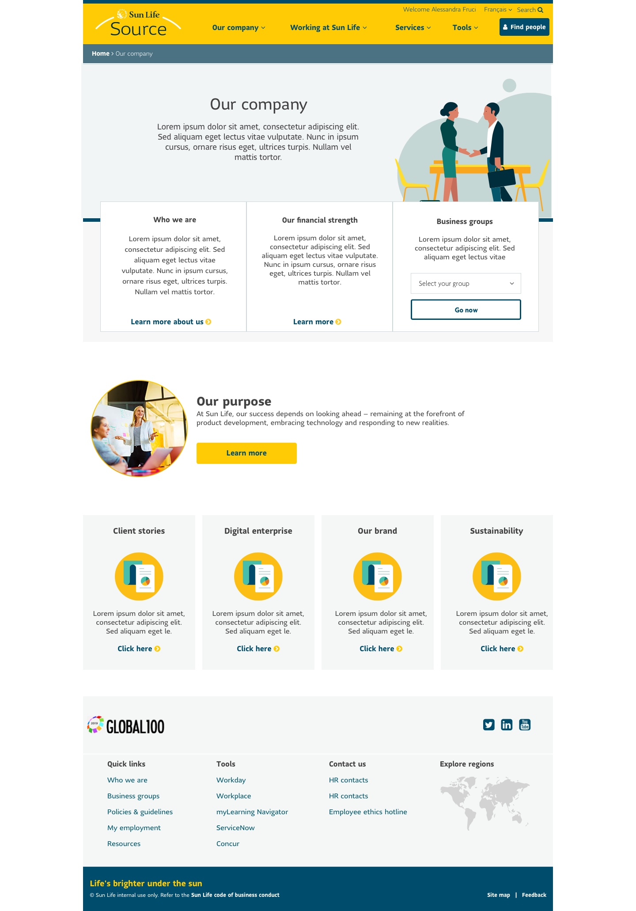
Takeaways. Wins. Challenges
After an exhausting final months, the project launched in late Novembers. Feedback has been overwhelmingly positive since launch, from both Senior leaders and employees across the globe. Overall successes include:
- Increased site performance (i.e load times and searchability)
- Mobile support
- Overwhelmingly positive feedback in the site's first month of launch.
- Site adoption and content consumption is up 25%
- Senior leadership is extremely satisfied.
Migration to the AEM has been bumpy. But most of the deliverables for Phase 1 were included and no sacrifices were made to the experience or the performance
- 57
- Iterations
- 1000
- pages
- 164
- Stakeholders
- 10m
- yearly page views
“Thanks to all of the teams who contributed to the refreshed Source and congratulations. The refreshed site is fantastic - well done!”
Dean Connor - CEO Sun Life